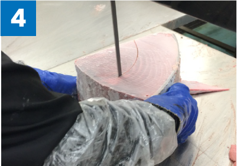
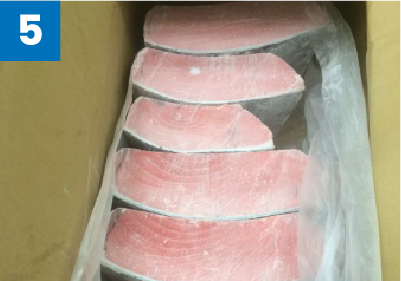
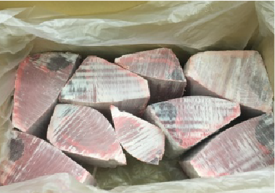
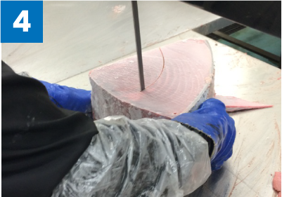
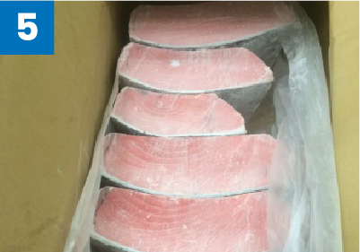
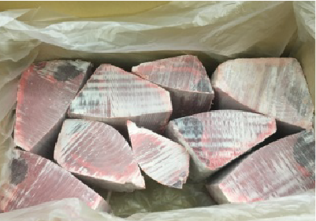
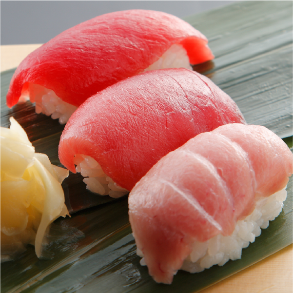
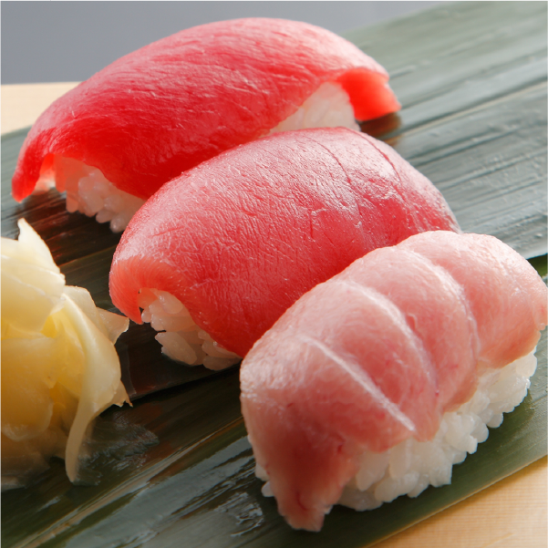

Types of Maguro We Provide
HON MAGURO
Bluefin Tuna
・A large species that can reach up to 350 kg, making it the largest maguro.
・Found both in the wild and in aquaculture.
・Cultivated in Japan and the Mediterranean (including Turkey and Malta).
・While it comes with a high price tag, it is renowned for its rich, flavorful, and fatty meat.
MINAMI MAGURO
Southern Blue-Fin
・It can grow up to 180 kg in size, ranking as the second-largest maguro after the Bluefin.
・Distributed in the southern hemisphere.
・Found in both the wild and in aquaculture.
・Aquaculture of this species primarily takes place in Australia.
・Known for its robust flavor and high-quality fat content.
MEBACHI MAGURO
Big Eye
Medium-sized Species (20-120kg)
・This category encompasses medium-sized species, with weights ranging from 20 to 120 kg.
・In Japan, the term "maguro" typically denotes the Yellowfin Tuna.
・These maguro are found exclusively in their natural habitats.
・They inhabit tropical and temperate waters across the globe.
・Renowned for their invigorating flavor and moderate fat content.
KIHADA MAGURO
Yellow Fin
Small-sized Species (20-70kg)
・Falling within the small-sized range, these maguro weigh between 20 and 70 kg.
・They are exclusively located in the wild.
・Widely distributed across tropical and subtropical waters worldwide.
・These maguro are distinguished by their delicate and refined flavor, characterized by lean meat.
BINNAGA MAGURO
Albacore
Small-sized Species (10-40kg)
・These are small-sized species, typically weighing between 10 and 40kg.
・They are exclusively found in their natural habitats.
・These maguro are widely distributed across tropical and temperate waters worldwide.
・Their distinctive feature is their pink flesh, renowned for its delicate and tender flavor.
From Sourcing Maguro
to Arrival in Singapore
About Mediterranean Farmed
HON MAGURO (Bluefin Tuna)
・We catch large wild HON MAGURO (ranging from 300lb to 600lb) and nurture them in our farms for six months.
・Onboard our vessels, the maguro is expertly cut into four loins and promptly placed into a super freezer.
・It is then directly transported from the Mediterranean to our factory in Japan, where it is preserved in a super freezer.
About Wild Maguro
After the wild maguro are caught, the gills and innards are removed onboard and the maguro is frozen for transportation to Japan.
Place of Origin
1. Malta
・Highest volume
・Features robust red flesh with excellent color retention
・Low in fat
・Predominantly consists of large fish (over 200 kg)
・Available in supermarkets
2. Tunisia
・Share similar characteristics with Malta
3. Turkey
・Rich in fat content
・Pale flesh
・Comprised of extra-large fish (over 280 kg)
・Primarily sourced for sushi restaurants
4. Croatia
・Abundant in fat
・Pale flesh
・Comprises smaller fish (under 100 kg)
・Typically raised for 2-3 years
Japan*:
Resembles Croatia but raised over multiple years (3-4 years) as fresh produce
Processing Workflow
(Onboard at the Farm
and in Our Factory)
An Illustration of Processing
at Our Factory
Back Loin to SE-KAWARA (CHU-TORO) and AKAMI
 





Belly Loin to O-TORO and AKAMI
Export Process
Shipment by air
With processing typically completed within a one-week lead time. This allows for next-day delivery, ensuring swift and timely receipt of our products.
Orders > Delivery period is short
We are committed to responding flexibly to your urgent orders and ensuring timely delivery.
You can receive the item by 1 week + a day!
Savoring Maguro
Mastering Freezing and Thawing Techniques
Freezing at -60°C
Maguro is an exceptionally temperature-sensitive species. The standard temperature in household freezers is around -18°C, which is excessively high for maguro, causing it to discolor rapidly. To prevent this, we store maguro at approximately -60°C, ensuring precise temperature control and upholding strict quality standards.
A: Salt Water
1.Prepare 3% salt water.
2."Maguro" in the saltwater for a few minutes. All sides are washed.
3.Dry the "Maguro" with a paper towel and place in the refrigerator for a couple of hours.
B: Iced Water
1.Wash the "Maguro" briefly with 3% salt water.
2."Maguro" in a "ZIPLOC" bag.
3.The bag in ice water for approximately one hour.
 

Improper handling in the kitchen
accounts for 80% of complaints
COLOR
After defrosting, the color of Maguro can be maintained for up to a day. Fatty cuts tend to undergo color changes more rapidly. Defrosting Maguro in the morning for lunchtime and after lunch for dinner. The color may change faster compared to storage in a super freezer.
SINEW (SUJI)
Our cutting technique minimizes sinew and achieve consistent quality. Slight variations in sinew content may occur. Inherent and contribute to the unique characteristics of each piece (SAKU).
BLOOD SPOT (KESSEN)
Smaller ones may still be present. These small blood spots can be easily removed in the kitchen after defrosting.
In our restaurant, we take great care when thawing frozen maguro to ensure it doesn't undergo discoloration or degradation.